Simulado 1
Antes da fase de vídeo
Para medir onde você está na parte comum e ajustar o estudo enquanto ainda dá tempo.
30 dias após a compra

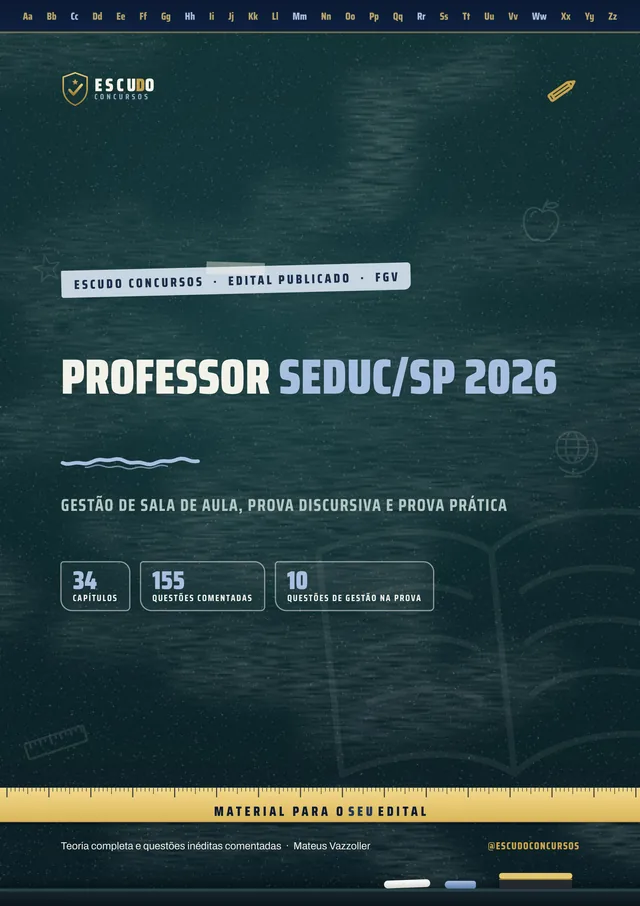
155questões
comentadas
São 5.000 vagas efetivas de Professor de Ensino Fundamental e Médio, e as 10 questões de Gestão de Sala de Aula valem para todos os componentes. O seu material cobre essa parte comum? Curso feito a partir do Edital nº 01/2026, item por item, com a bibliografia fechada do edital, o método da Prova Discursiva e o da Prova Prática em vídeo. Ele não cobre as 20 questões de Específicos do seu componente.
De acordo com o Edital nº 01/2026, de 19/11/2026 · FGV
de R$ 47 por 21% OFF
R$37
com o cupom SEDUCSP37 até 15/02/2027. Pelo botão, o cupom já vai preenchido.
R$47
Curso completo, com acesso imediato.
Resposta rápida
A Prova Objetiva e a Prova Discursiva do concurso de Professor de Ensino Fundamental e Médio da SEDUC/SP estão previstas para 25/04/2027, aplicadas pela FGV (Edital nº 01/2026, publicado em 19/11/2026). As inscrições vão das 16h de 26/11/2026 às 16h de 15/02/2027, e o vídeo da Prova Prática é enviado de 19/03 a 02/04/2027.
São 5.000 vagas efetivas de Professor de Ensino Fundamental e Médio, 2.000 de 25 horas semanais (subsídio de R$ 3.478,13) e 3.000 de 40 horas (R$ 5.565,00), mais a lista de contratação temporária (PSS). A taxa de inscrição é de R$ 64,00.
São 100 pontos: Prova Objetiva (30 questões de A a E, 10 de Gestão de Sala de Aula e 20 de Conhecimentos Específicos, mínimo de 15 pontos), Prova Discursiva (2 questões de até 20 linhas, 20 pontos, mínimo de 10), Prova Prática de Simulação de Aula em vídeo de 5 a 7 minutos (30 pontos, mínimo de 15) e Títulos (20 pontos). O curso cobre as 10 questões de Gestão de Sala de Aula e o método da discursiva e do vídeo, mas não as 20 de Específicos. O curso em PDF da ESCUDO segue o edital item por item, com 34 capítulos, 155 questões comentadas e 2 simulados de 10 questões com proposta de Prova Discursiva, e tem 7 dias de garantia pela Hotmart.
O concurso
O Edital nº 01/2026, da Secretaria da Educação do Estado de São Paulo, publicado em 19/11/2026 e organizado pela FGV, abre 5.000 vagas efetivas de Professor de Ensino Fundamental e Médio (PEFM): 2.000 de Jornada Completa, de 25 horas semanais, com subsídio inicial de R$ 3.478,13, e 3.000 de Jornada Ampliada, de 40 horas semanais, com R$ 5.565,00. O mesmo concurso forma a lista de classificação para contratação temporária (PSS), e quem leciona hoje como temporário também precisa fazer as provas.
As inscrições vão das 16h de 26/11/2026 às 16h de 15/02/2027, só pela internet, no site da FGV, com taxa de R$ 64,00. O vídeo da Prova Prática é enviado de 19/03 a 02/04/2027, antes das provas escritas, e a Prova Objetiva e a Prova Discursiva estão previstas para 25/04/2027.
São 100 pontos em quatro etapas: a Prova Objetiva, de 30 questões de A a E (10 de Gestão de Sala de Aula e 20 de Conhecimentos Específicos), vale 30 pontos, com mínimo de 15; a Prova Discursiva, de 2 questões de até 20 linhas, vale 20, com mínimo de 10 e nota maior que zero em cada questão; a Prova Prática de Simulação de Aula, em vídeo de 5 a 7 minutos, vale 30, com mínimo de 15; e a Avaliação de Títulos e de Experiência, só classificatória, vale 20.
Atenção ao que este curso cobre: as 10 questões de Gestão de Sala de Aula, comuns a todos os componentes, o método da Prova Discursiva e o da Prova Prática em vídeo. As 20 questões de Conhecimentos Específicos, que valem dois terços da Prova Objetiva, e o conteúdo do seu componente não estão aqui: eles têm programa próprio no Anexo VI do edital.
| Parte da prova | Questões | Capítulos |
|---|---|---|
| Gestão de Sala de Aula (comum a todos os componentes): programa e bibliografia do edital | 10 | 26 |
| Prova Discursiva: 2 questões de até 20 linhas, sobre o Currículo Paulista e a metodologia | 2 | 3 |
| Prova Prática de Simulação de Aula: vídeo de 5 a 7 minutos | vídeo | 4 |
| Conhecimentos Específicos: programa próprio de cada componente, não coberto por este curso | 20 | 0 |
| Mais o capítulo 001, sobre como é a prova e como usar o curso. O curso treina o conteúdo com 155 questões nos capítulos e 20 nos simulados. | 175 | 34 |
O formato
Você estuda lendo, no seu ritmo, pela área de membros da Hotmart ou com os arquivos baixados. O curso foi feito a partir do Edital nº 01/2026 e de seus anexos, item por item, na ordem do conteúdo programático do Bloco I, com a bibliografia fechada que o edital indica. As questões seguem o formato da prova: cinco alternativas, de (A) a (E).
Páginas reais do PDF
Toque numa página para ver em tamanho maior.
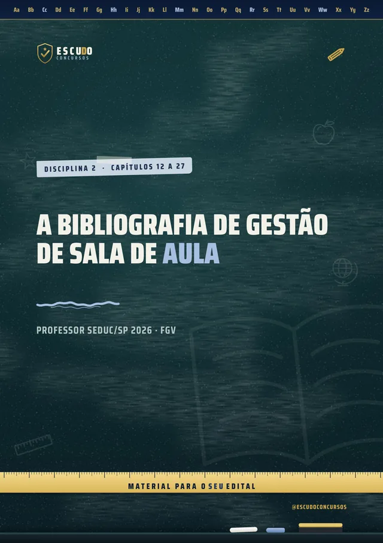
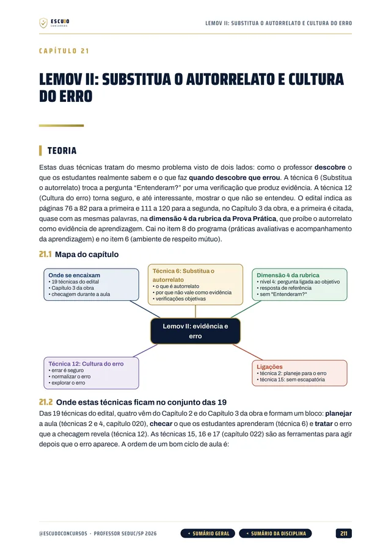
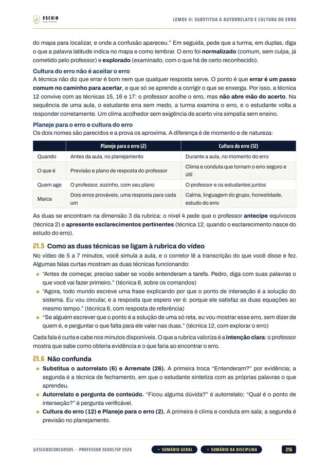
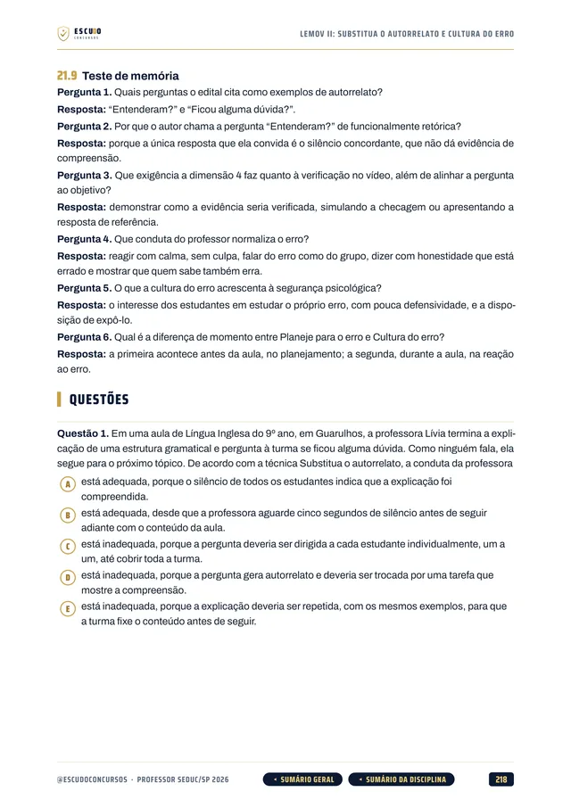
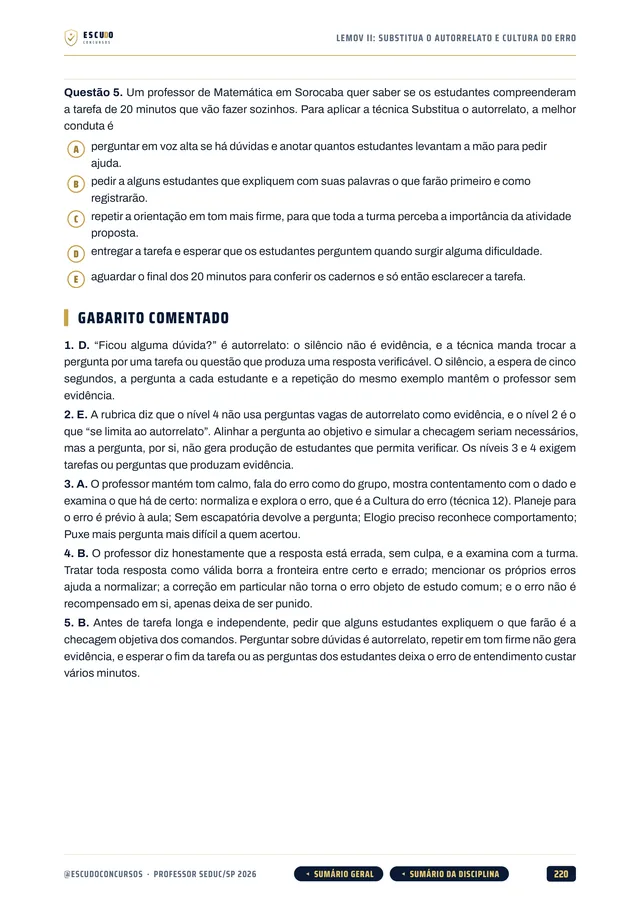
100% em PDF · Garantia de 7 dias · Pagamento pela Hotmart
O que você recebe
Curso em PDF organizado em 7 módulos, com 383 páginas no padrão visual ESCUDO, para ler no computador, no tablet, no celular ou no app da Hotmart. Não há videoaulas.
34 capítulos: Gestão de Sala de Aula (10), a bibliografia do edital (16), Prova Discursiva e Currículo Paulista (3) e Prova Prática de Simulação de Aula (4), mais o capítulo 001 sobre como é a prova.
155 questões inéditas com 5 alternativas, de (A) a (E), como na prova, todas com gabarito comentado: por que a correta está correta e onde está o erro de cada uma das outras.
Gestão de Sala de Aula em 10 capítulos, um para cada item do programa: planejamento, tempo e espaço, engajamento, metodologias ativas, conflitos, ambiente de aprendizagem, comunicação, avaliação, inclusão e articulação.
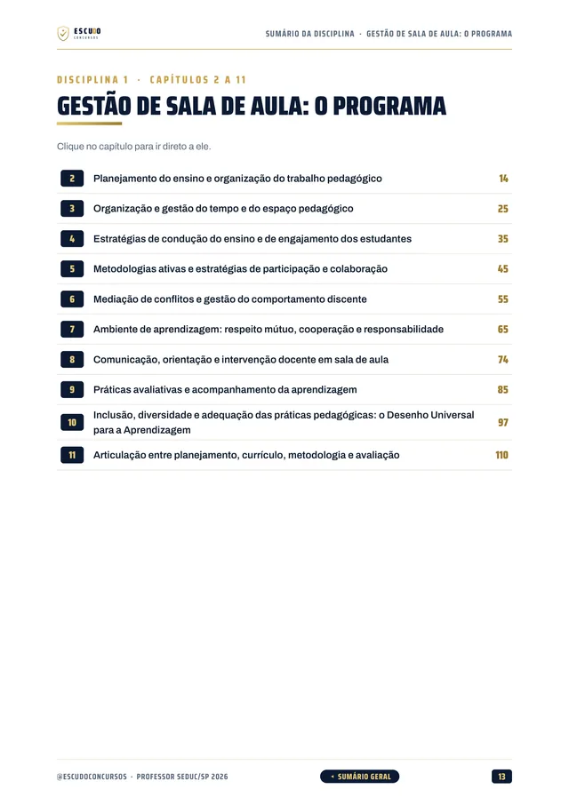
A bibliografia fechada do edital em 16 capítulos: Weinstein e Novodvorsky, Wiggins e McTighe, Willingham e as técnicas do Aula Nota 10 3.0, de Lemov, com um capítulo de revisão lado a lado.
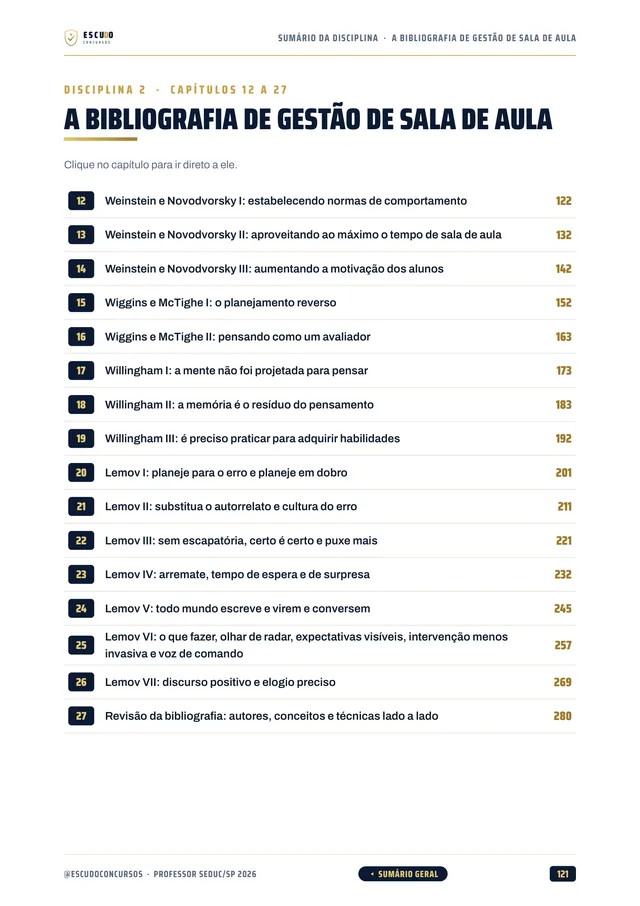
Prova Discursiva e Currículo Paulista em 3 capítulos: a estrutura do Currículo Paulista, os critérios de correção do edital, os erros que zeram a prova e respostas-modelo comentadas.
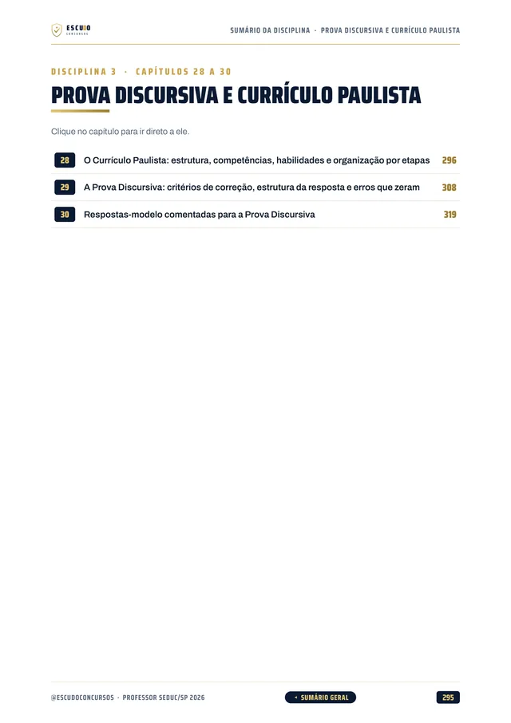
Prova Prática em vídeo em 4 capítulos: regras, prazos, nota zero e descontos, a rubrica das quatro dimensões comentada, roteiros de 5 a 7 minutos a partir das aulas oficiais da rede e a simulação de atendimento na Educação Especial.
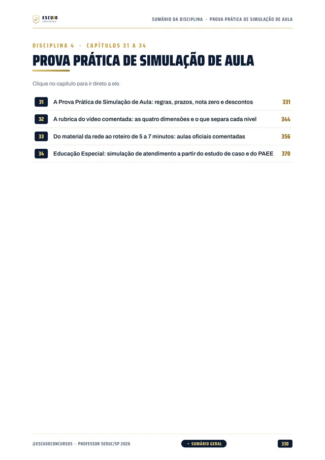
Teoria com recursos para memorizar: mapa de cada capítulo, esquemas, quadros de “pegadinha” e “não confunda”, questão comentada passo a passo, revisão relâmpago e teste de memória. Navegação clicável: do sumário você vai direto à parte e ao capítulo, e volta pelos botões do rodapé.
2 simulados inéditos de 10 questões de Gestão de Sala de Aula, de 5 alternativas, cada um com uma proposta de Prova Discursiva, duas respostas-modelo e caderno de comentários. O Simulado 1 é liberado 30 dias após a compra e o Simulado 2, 60 dias após a compra.
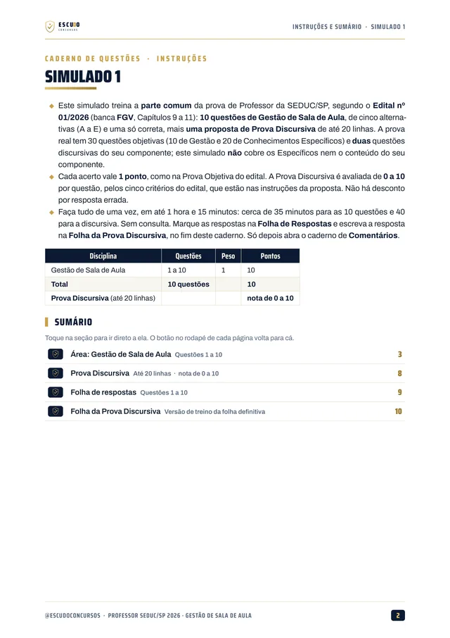
Área de membros
| Módulo | Conteúdo | Liberação |
|---|---|---|
| M0 Comece aqui | Apresentação + capítulo 001 (como é a prova e como usar o curso). Bônus: PDF completo para baixar e imprimir | Na compra; o PDF completo no 8º dia |
| M1 Gestão de Sala de Aula | Capítulos 002 a 011 | Na compra |
| M2 A bibliografia do Bloco I | Capítulos 012 a 027 | Na compra |
| M3 Prova Discursiva e Currículo Paulista | Capítulos 028 a 030 | Na compra |
| M4 Prova Prática de Simulação de Aula | Capítulos 031 a 034 | Na compra |
| M5 Simulado 1 | 10 questões de Gestão de Sala de Aula, proposta de Prova Discursiva e caderno de comentários | 30 dias após a compra |
| M6 Simulado 2 | 10 questões de Gestão de Sala de Aula, proposta de Prova Discursiva e caderno de comentários | 60 dias após a compra |
Treino no formato da prova
Cada simulado tem 10 questões de Gestão de Sala de Aula, de 5 alternativas, as mesmas 10 que a Prova Objetiva reserva à parte comum, mais uma proposta de Prova Discursiva de até 20 linhas, com duas respostas-modelo e caderno de comentários. A prova real tem 30 questões objetivas e 2 questões discursivas do seu componente: os simulados não cobrem os Específicos nem o conteúdo do seu componente.
Simulado 1
Para medir onde você está na parte comum e ajustar o estudo enquanto ainda dá tempo.
30 dias após a compra
Simulado 2
Liberado a tempo do último teste antes da prova de 25/04/2027.
60 dias após a compra
Para quem é
Para quem vai prestar Professor de Ensino Fundamental e Médio da SEDUC/SP, em qualquer componente, e quer dominar as 10 questões de Gestão de Sala de Aula, a Prova Discursiva e o vídeo da Prova Prática. O conteúdo do seu componente precisa de outro material.
Você tem 7 dias de garantia pela Hotmart. Se não for o que você esperava, pede o reembolso pela própria Hotmart, dentro do prazo.
Sem surpresa na área de membros
Na compra: todas as disciplinas em PDF, uma por módulo, com a teoria e as questões comentadas. É o curso inteiro, para começar a estudar no mesmo dia.
8 dias após a compra: o PDF completo para imprimir. É o mesmo conteúdo dos módulos num arquivo só, liberado depois da garantia de 7 dias.
Simulado 1: 30 dias após a compra, para medir onde você está no meio da preparação.
Simulado 2: 60 dias após a compra, a tempo do último teste antes da prova de 25/04/2027.
O PDF completo e os simulados aparecem bloqueados na área de membros até a data de cada um: não é conteúdo faltando, é a liberação programada.
Dúvidas
Não. É um curso 100% em PDF: teoria, questões comentadas e simulados para ler e resolver.
Não. Ele cobre as 10 questões de Gestão de Sala de Aula, comuns a todos os componentes, e ensina o método da Prova Discursiva e o da Prova Prática em vídeo. As 20 questões de Conhecimentos Específicos têm programa próprio de cada componente no Anexo VI do edital e não estão aqui.
O acesso é imediato depois da confirmação do pagamento, pela área de membros da Hotmart (web ou app). O PDF completo para baixar e imprimir é liberado no 8º dia.
O Simulado 1 é liberado 30 dias após a compra e o Simulado 2, 60 dias após a compra.
Serve para a parte comum, que é a mesma em todos: o Bloco I de Gestão de Sala de Aula, o método da Prova Discursiva e o da Prova Prática em vídeo. O conteúdo do seu componente (Matemática, Língua Portuguesa, Física, Ciências, Língua Inglesa e os demais) precisa de outro material.
Serve. O edital exige que os temporários atuais também se inscrevam e façam as provas para entrar na lista do PSS, e a parte comum é a mesma do concurso de vagas efetivas.
Nas 10 questões de Gestão de Sala de Aula, sim: o bloco é comum a todos. O capítulo 34 trata da simulação de atendimento a partir do estudo de caso e do PAEE. A bibliografia específica da Educação Especial para os Específicos e para a discursiva não está no curso.
A Prova Objetiva tem 30 questões de múltipla escolha com cinco alternativas, de (A) a (E), e uma só correta: 10 de Gestão de Sala de Aula e 20 de Conhecimentos Específicos, 1 ponto cada, com mínimo de 15. A Prova Discursiva tem 2 questões de até 20 linhas, 20 pontos, mínimo de 10 e nota maior que zero em cada questão. A Prova Prática é um vídeo de 5 a 7 minutos, 30 pontos, mínimo de 15. A Avaliação de Títulos vale 20 e é só classificatória.
De 19/03 a 02/04/2027, antes das provas escritas. O edital da Prova Prática e dos Títulos sai em 18/03/2027, e o vídeo só é corrigido para quem for aprovado na Prova Objetiva. Os capítulos 31 a 34 ajudam a escolher a aula e a montar o roteiro.
Não. As 155 questões de treino e as dos simulados são inéditas, escritas no formato do edital a partir do conteúdo programático e da bibliografia indicada.
Você tem 7 dias de garantia pela Hotmart. Se não for o que você esperava, pede o reembolso.
SEDUC/SP 2026 · Professor · Gestão de Sala de Aula, Discursiva e Prova Prática
de R$ 47 por 21% OFF
R$37
com o cupom SEDUCSP37 até 15/02/2027.
R$47
Curso completo, com acesso imediato.
Material para o SEU edital. ESCUDO Concursos.
Continue estudando
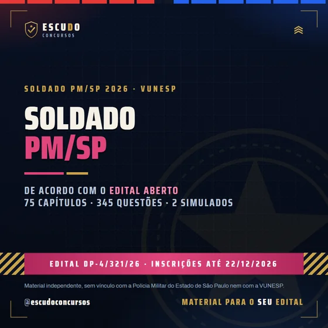
PM/SP 2026 · Edital aberto · VUNESPSoldado da Polícia Militar de São Paulo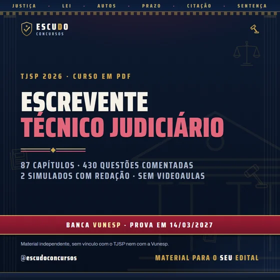
TJSP 2026 · VunespEscrevente Técnico Judiciário do TJSP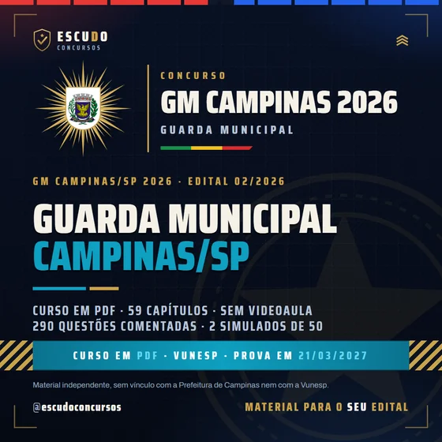
GM Campinas 2026 · Edital aberto · VunespGuarda Municipal de Campinas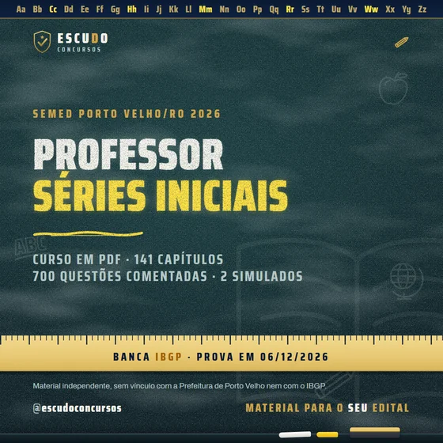
SEMED Porto Velho/RO 2026 · IBGPProfessor Séries Iniciais de Porto Velho